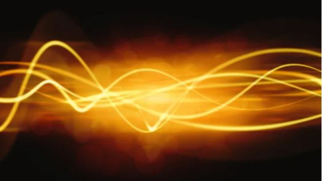

Discover the differences between the speed of light and everyday speeds!
Light Years are the most commonly used units for measuring astronomical distances. But what exactly is a light-year? According to NASA:
A light-year is the distance light travels in one year. Light moves through interstellar space at an incredible speed of 186,000 miles (300,000 kilometers) per second, covering approximately 5.88 trillion miles (9.46 trillion kilometers) in a single year.
At the beginning of the semester, we explored the concept of light speed, one of the most fundamental topics in Astronomy. While we know that light travels at a constant speed, how fast is it compare to other things on Earth?
Light is a form of electromagnetic radiation, a type of energy that travels through space as oscillating electric and magnetic fields. It exhibits wave-particle duality, behaving both as a wave and as particles called photons. Photons are tiny packets of energy that travel at the speed of light in a vacuum, and that is what we are comparing on this website.
This website is designed to help you better understand the speed of light and how it compares to everyday objects.
Enter the time it takes for you traveled and the distance:
Human Walk: 5 km/h
Car: 100 km/h
Airplane: 900 km/h
Rocket: 40,284 km/h
Light Speed: 1,079,252,848.8 km/h
Nasa, “What is a light-year?" https://science.nasa.gov/exoplanets/what-is-a-light-year/
Livescience, “What are photons?“ https://www.livescience.com/what-are-photons
inchcalculator, “Speed of Light Conversion Calculator“ https://www.inchcalculator.com/convert/from-speed-of-light/
spacecentre, “How fast can a rocket go?“ https://www.spacecentre.nz/resources/faq/spaceflight/rocket-speed.html#:~:text=Here%20are%20a%20few%20examples,known%20as%20Earth%20escape%20velocity.
thinkmetric, “Speed“ https://thinkmetric.uk/basics/speed/